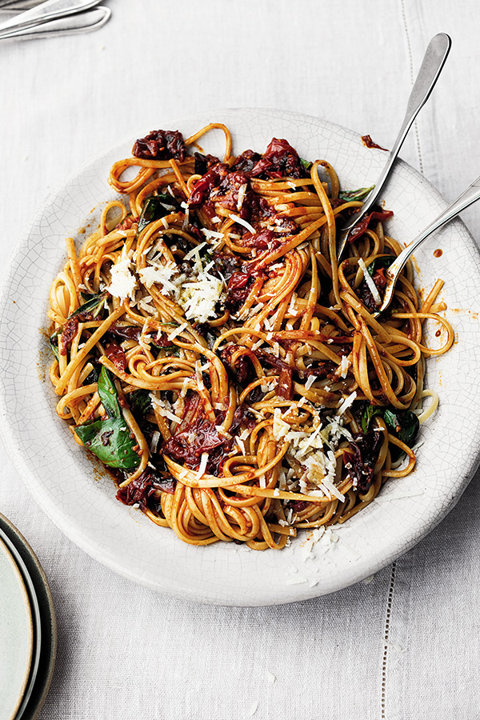

Cherry Tomato Pasta

Description
A simple and delicious recipe from Yotam Ottolenghi.
Servings = 4
Ingredients
- 75 ml olive oil
- 2 garlic gloves thinly sliced
- 1kg cherry tomatoes sliced in half
- 1/2 tsp caster sugar
- 1 dried ancho chilli torn apart
- 20g basil leaves
- 400g fettuccine (or linguine)
- 35g Parmesan finely grated
- salt
- Put the oil into a large sauté pan and place on a medium high heat. Once hot, add the garlic and fry for up to 1 minute, stirring a few times, until starting to caramelise. Add the tomatoes - carefully, so that the oil doesn't spit - along with the sugar, chilli and 1/2 teaspoon of salt. Pour over 200ml of water and stir for 4 minutes, until the tomatoes are starting to break down and the liquid is bubbling. Reduce the heat to medium low and cook for about 1 hour, stirring every once in a while, until the tomatoes and ancho have broken down and the sauce has thickened. Stir in the basil and set aside somewhere warm.
- Fill a large saucepan with plenty of salted water and place on a high heat. Bring to the boil, then add the pasta. Cook for 10-12 minutes, or according to the packet instructions, until al dente. Drain the pasta and stir it together with the sauce. Divide among 4 bowls, sprinkle with Parmesan and serve.